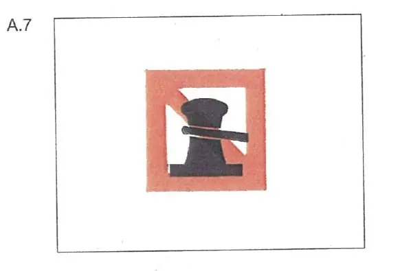

§ 7.04 Festmachen
Rheinschiffahrtspolizeiverordnung
1. | Fahrzeuge und Schwimmkörper sowie schwimmende Anlagen dürfen am Ufer nicht festmachen: | ||
a) | auf den Abschnitten der Wasserstraße, für die ein allgemeines Festmacheverbot besteht; | ||
b) | auf den durch das Tafelzeichen A.7 (Anlage 7) gekennzeichneten Strecken, auf der Seite der Wasserstraße, auf der das Tafelzeichen steht. |  | |
2. | Auf den Abschnitten, auf denen das Festmachen am Ufer nach Nummer 1 Buchstabe a verboten ist, dürfen Fahrzeuge und Schwimmkörper sowie schwimmende Anlagen nur auf den Strecken festmachen, die durch eines der Tafelzeichen E.7 oder E.7.1 (Anlage 7) gekennzeichnet sind, und nur auf der Seite der Wasserstraße, auf der das Tafelzeichen steht. | ||
3. | Bäume, Geländer, Pfähle, Grenzsteine, Säulen, Eisenleitern, Handläufe und ähnliche Gegenstände dürfen weder zum Festmachen noch zum Verholen benutzt werden. |